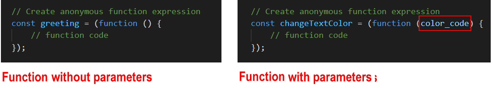
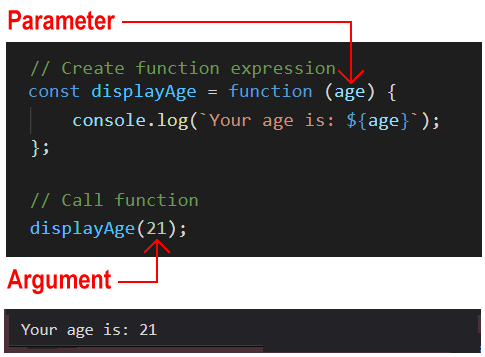

Learning Goals
At the end of this Tutorial, you will be able to:
- Create a function declaration.
- Create a function expression.
- Recognise that function declarations are hoisted but function expressions are not.
- Recognise that function expressions may be anonymous (unnamed).
- Use arrow functions that contain one or more statements.
Anonymous Functions: Exercises
Function expressions
A second way to create a function is with a function expression. See the example below:
// Function expression const greeting = (function displayGreeting() { console.log("Hello, world!"); });
A function expression is stored inside a regular JavaScript variable.
The syntax of a function expression as follows:
- Begin by writing a function declaration as shown below

- Enclose the function declaration inside a pair of parenthesis () .

- Add a semi-colon statement terminator ; at the end.
 A function expression ends with a semi-colon because it is a part of an executable statement.
A function expression ends with a semi-colon because it is a part of an executable statement.
- Begin the code with an equals = sign to make it the RHS of an assignment statement.

- On the LHS, write the variable keyword and the name of the variable that will store the function.
 Developers typically use the const variable type to store a function expression. This is to ensure the function is not accidentally changed or overwritten elsewhere in the program.
Developers typically use the const variable type to store a function expression. This is to ensure the function is not accidentally changed or overwritten elsewhere in the program.
Note the following:
- A function declaration begins with the function keyword.
- A function expression includes the function keyword, but begins with a variable declaration.
- A function expression includes the function keyword, but begins with a variable declaration.
Strictly speaking, a function expression is not stored inside a JavaScript variable. Only the the value that the function expression evaluates to is stored in the variable.
Function expressions are not hoisted
You call a function expression in a similar way to how you call a function declaration. The difference is that you type the variable name rather than the function name. As with calling a function declaration, you follow this, without a space, with a pair of parenthesis (). See the example below.

Here are two important differences between function declarations and function expressions:
- Unlike a function declaration, a function expression does not create a function variable (which is hoisted).
- Instead, the function is stored inside a regular variable (which is not hoisted).
As a result, you can call a function expression only after you have created it – and never before.

In other words, you must treat a variable that stores a function expression in the same way as any other variable – first declare it, and only then use it.
Anonymous function expressions
Consider the sample function expression below.

You can see that the function contains two names:
- A variable name: In this example, greeting.
- A function name: In this example, displayGreeting.
But only one name is needed to call the function elsewhere in the program – the variable name.
So: do we need the function name at all?
Answer: 'No'.
You can convert a named function expression to an unnamed or anonymous function expression as follows:
- Remove the function name. But leave the parenthesis () after the keyword function.

- Remove the outer parenthesis () that encloses the RHS of the assignment statement.

That's it. You have now created an anonymous function.
Exercise 9.1: Displaying a message
Rewrite the function declaration that displays a short message as an anonymous function. Verify that the anonymous function is not hoisted by calling the function before creating it.
Exercise 9.2: Joining two strings
Rewrite the function declaration that joins the two strings as an anonymous function.
Parameters and arguments
As with function declarations, you can pass values to an anonymous function. See the example below.
 Exercise 9.3: Pass an argument when calling a function
Rewrite the function declaration that passes a number as an anonymous function.
Anonymous functions can also return alues back to the program that called them.
// Anonymous function expression with parameters const sumB = function (a, b) { console.log(`Output B: ${a + b}`); return (a + b); }; // Function call with arguments resultB = sumB(3, 4); console.log(`Returned result B: ${resultB}`);
Exercise 9.4: Return a value from a called function
Rewrite the function declaration that calls a random number generator function as an anonymous function.
Immediately-invoked function expressions
You can amend the syntax of a function expression, includng an anonymous function, so that it is run without being called from elsewhere in the program. Such a function is said to be immediately-invoked.
Note that function declarations cannot be immediately-invoked. Only function expressions.
To invoke a function immediately, add a parentheses () at the end of the function, just before the semi-color. See the example below.

Exercise 9.5: Create an immediately invoked function
Copy the function in exercise 9-1, rename it, and re-write it as an immediately invoked anonymous function.